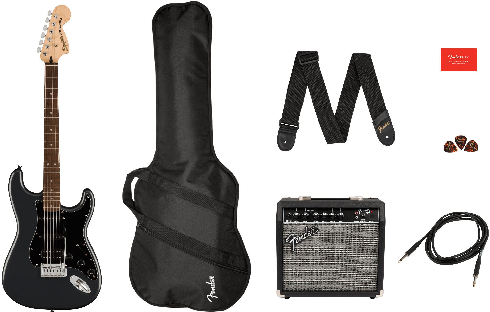
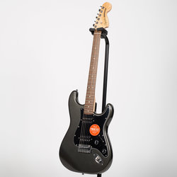
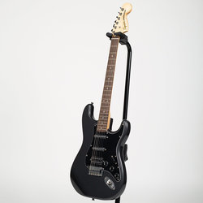
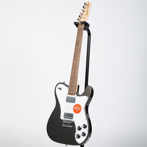

Squier Affinity Series Stratocaster HSS Pack - Laurel, Charcoal Frost Metallic
A superb gateway into the time-honoured Fender® family, the Squier® Affinity Series™ Stratocaster® HSS delivers legendary design and quintessential tone for today's aspiring guitar hero. This Strat® features several player-friendly refinements such as a thin and lightweight body, a slim and comfortable "C"-shaped neck profile, a 2-point tremolo bridge for superior tremolo action and sealed die-cast tuning machines with split shafts for smooth, accurate tuning and easy restringing. Loaded with a Squier humbucking bridge pickup and single-coil neck and middle pickups for genre-defying sonic variety, this model is ready to accompany any player at any stage. Delivering 15 watts of pure Fender tone, the Frontman 15G amplifier features both clean and overdrive channels, three-band EQ, headphone jack for silent practice and an aux input for connecting a media device. With the included padded gig bag, picks, strap and 10' cable, the Squier Affinity Stratocaster HSS Pack has everything you need to turn your affinity for music into a lifelong passion.
Other Offers
| Photo |  |  |  |
| Model | 885978723409 | 885978935390 | 885978723546 |
| Price | $359.99 buy | $499.99 buy | $369.99 buy |
| Country of Origin | Indonesia | Indonesia | Indonesia |
| Model | 0378051569 | 0372821069 | 0378250569 |
| Bridge | 2-Point Synchronized Tremolo with Block Saddles | 2-Point Synchronized Tremolo with Block Saddles | 6-Saddle Strings-Through-Body Tele |
| Pickup Configuration | HH | HSS | HH |
| Pickup Type | Ceramic Humbucker | Ceramic Humbucker, Ceramic Single-Coil | Ceramic Humbucker |